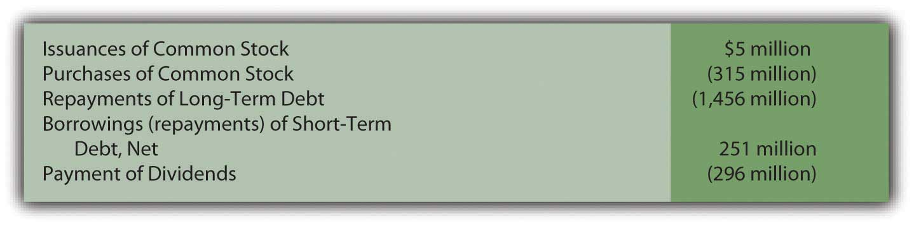

At the end of this section, students should be able to meet the following objectives:
Question: Thus far in this textbook, the balance sheet and the income statement have been studied in comprehensive detail along with the computation of retained earnings. At this point, a student should be able to access a set of financial statements (on the Internet, for example) and understand much of the reported information. Terms such as “FIFO,” “accumulated depreciation,” “goodwill,” “capital stock,” “bad debt expense,” and the like that might have sounded like a foreign language at the start of this exploration into financial accounting should now have a genuine meaning.
Examination of one last statement is necessary to complete the financial portrait of a reporting entity: the statement of cash flows. This statement was introduced briefly in Chapter 3 "In What Form Is Financial Information Actually Delivered to Decision Makers Such as Investors and Creditors?". Why is it needed by decision makers? What is the rationale for presenting a statement of cash flows? Is it required by U.S. GAAP?
Answer: Coverage of the statement of cash flows has been delayed because the figures presented do not come directly from ending T-account balances found in a business’s general ledger. Instead, the accounts and amounts shown here are derived from the other financial statements. Thus, an understanding of those statements is a helpful prerequisite for the construction of a statement of cash flows.
The delay in examining the statement of cash flows should not be taken as an indication of its lack of significance. In fact, some decision makers view it as the most important of the financial statements. They are able to see how corporate officials managed to get and then make use of the ultimate asset: cash. The acquisition of other assets, the payment of debts, and the distribution of dividends inevitably leads back to a company’s ability to generate sufficient amounts of cash. Consequently, presentation of a statement of cash flows is required by U.S. GAAP for every period in which an income statement is reported.
To reiterate the importance of this information, Michael Dell, founder of Dell Inc., states in his book Direct from Dell: Strategies That Revolutionized an Industry (written with Catherine Fredman): “We were always focused on our profit and loss statement. But cash flow was not a regularly discussed topic. It was as if we were driving along, watching only the speedometer, when in fact we were running out of gas.”Michael Dell with Catherine Fredman, Direct from Dell: Strategies That Revolutionized an Industry (New York: HarperBusiness, 1999), 47.
The income statement and the statement of cash flows connect the balance sheets from the beginning of the year to the end. During the course of that time, total reported net assets either increase or decrease as does the entity’s cash balance. The individual causes of those changes are explained by means of the income statement and the statement of cash flows.
The purpose of the statement of cash flows is virtually self-evident: it reports the cash receipts (cash inflows) and the cash disbursements (cash outflows) to explain the changes taking place during the year in the cash balance. However, the physical structure of this statement is not self-evident. As illustrated in Chapter 3 "In What Form Is Financial Information Actually Delivered to Decision Makers Such as Investors and Creditors?", all cash flows are classified within three distinct categories. Chapter 17 "In a Set of Financial Statements, What Information Is Conveyed by the Statement of Cash Flows?" is designed to demonstrate the logic of this classification system and the method by which the reported numbers are derived.
Question: Because current assets are listed in order of liquidity, most businesses present “cash and cash equivalentsShort-term, highly liquid investments with original maturities of ninety days or fewer that are readily converted into known amounts of cash.” as the first account on their balance sheets. For example, as of December 31, 2008, Ball Corporation reported cash and cash equivalents totaling $127.4 million. The statement of cash flows uses this same terminology as it explains the drop of $24.2 million in Ball’s cash and cash equivalents that took place during 2008. What constitutes cash and what are cash equivalents?
Answer: Cash consists of coins, currencies, bank deposits (both checking accounts and savings accounts) and some negotiable instruments (money orders, checks, and bank drafts). Cash equivalents are short-term, highly liquid investments that are readily convertible into known amounts of cash. They are so near their maturity date that significant changes in value are unlikely. Only securities with original maturities of ninety days or fewer are eligible to be classified as cash equivalents. Cash equivalents held by most companies usually include Treasury bills,A Treasury bill is a popular U.S. government security with a maturity date of one year or less. commercial paper,The term “commercial paper” refers to securities issued by corporations to solve their short-term cash needs. and money market funds.
Going forward, FASB is considering the elimination of the cash equivalents category. Any of these items other than cash will then appear in the financial statements as temporary investments. For simplicity purposes, cash will be used in the examples presented throughout this chapter. However, until the authoritative rules are changed, the accounting for cash equivalents is the same as that for cash.
Link to multiple-choice question for practice purposes: http://www.quia.com/quiz/2093012.html
Question: For reporting purposes all cash flows are classified within one of three categories: operating activities, investing activities, and financing activities. What transactions are specifically identified as operating activities?
Answer: Operating activitiesA statement of cash flow category used to disclose cash receipts and disbursements arising from the primary activities of the reporting organization. generally involve producing and delivering goods and providing services. These events are those that transpire on virtually a daily basis as a result of the organization’s primary function. For a business like Borders, operating activities include the buying and selling of books (and other inventory items) as well as the multitude of other tasks required by that company’s retail function. In simple terms, operating activities are those that are expected to take place regularly in the normal course of business.
Figure 17.1 Typical Operating Activity Cash Inflows and Outflows
The net number (the inflows compared to the outflows) is presented as the cash flows generated from operating activities. This figure is viewed as a good measure of a company’s ability to prosper. Analysts obviously prefer to see a positive number, one that increases from year to year. Some decision makers believe that this figure is a better reflection of a company’s financial health than reported net income because the ultimate goal of a business is to generate cash.
For example, International Paper reported a net loss on its income statement for the year ended December 31, 2008, of $1,282 million (considerably worse than any of the previous five years). However, its statement of cash flows for the same period reported a net cash inflow from operating activities of $2,669 million (considerably better than any of the previous five years). No one could blame a decision maker for being puzzled. Did the company do poorly during 2008 or wonderfully well? That is the problem with relying on only a few of the numbers in a set of financial statements without a closer and more complete inspection. What caused this company to lose over $1.2 billion dollars? How did the company still manage to generate nearly $2.7 billion in cash from its operating activities? In-depth analysis of financial statements is never quick and easy. It requires patience and knowledge and the willingness to dig through all the available information.
Question: On the statement of cash flows for the year ended August 31, 2008, Walgreen Co. reported that a net of over $2.8 billion in cash was spent in connection with a variety of investing activities. This company’s management obviously made decisions that required considerable sums of money. Details about those expenditures should be of interest to virtually any party analyzing this company. What cash transactions are specifically included in investing activities?
Answer: Investing activitiesA statement of cash flow category used to disclose cash receipts and disbursements arising from an asset transaction other than one relating to the primary activities of the reporting organization. encompass the acquisition and disposition of assets in transactions that are separate from the central activity of the reporting organization. These exchanges do not occur daily.
All of these cash transactions involve assets but, if classified as an investing activity, they are only tangentially related to the day-to-day operation of the business.
Figure 17.2 Walgreen Statement of Cash Flows Shows Four Investing Activity Cash Flows for the Year Ended August 31, 2008

Healthy, growing companies normally expect cash flows from investing activities to be negative (a net outflow) as money is invested by management especially in new noncurrent assets. As can be seen here, Walgreen’s spent over $2.2 billion in cash during this one year to buy property and equipment. The company apparently had sufficient cash available to fund this type of significant expansion.
Question: The third category of cash flows lists the amounts received and disbursed in financing activities. For the year ended June 28, 2008, Sara Lee Corporation reported that cash had been reduced by over $1.8 billion as a result of its financing activities. Again, that is a lot of money leaving the company. What cash transactions are specifically identified as financing activities?
Answer: Financing activitiesA statement of cash flow category used to disclose cash receipts and disbursements arising from a liability or stockholders’ equity transaction other than one relating to the primary activities of the organization. relate primarily to liabilities and shareholders’ equity in transactions that are separate from the central, day-to-day activities of the organization. Cash inflows from financing activities usually include issuing capital stock or incurring liabilities such as bonds or notes payable. Outflows are created by the distribution of dividends, the acquisition of treasury stock, the payment of noncurrent liabilities, and the like.
Sara Lee reported five financing activity cash flows for the year ended June 28, 2008. As can be seen in the specific information provided on its statement of cash flows, this company spent nearly $1.5 billion to repay liabilities, another $315 million to repurchase its own stock, and $296 million as dividend payments. Significant information that is readily apparent on this statement.
Figure 17.3 Sara Lee Statement of Cash Flows Shows Five Financing Activity Cash Flows for the Year Ended June 28, 2008
The net result reported for financing activities is frequently positive in some years and negative in others. When a company borrows money or sells capital stock, an overall positive inflow of cash is likely. In years when a large dividend is paid or debt is settled, the net figure for financing activities is more likely to be negative.
Link to multiple-choice question for practice purposes: http://www.quia.com/quiz/2093015.html
Link to multiple-choice question for practice purposes: http://www.quia.com/quiz/2093017.html
Link to multiple-choice question for practice purposes: http://www.quia.com/quiz/2092974.html
Question: Significant investing and financing transactions occasionally occur without a cash component. Land, for example, might be obtained by issuing common stock. Buildings are often bought through the signing of a long-term note payable so that cash payments are deferred into the future. Should that information be omitted from the statement of cash flows? If no cash is received or expended, should a transaction be reported on a statement of cash flows?
Answer: All investing and financing transactions need to be reported in some manner for the benefit of decision makers. They represent choices made by the organization’s management. If cash is not involved, such events must still be disclosed in a separate schedule (often just below the statement of cash flows) or explained in the notes to the financial statements. This information is valuable to interested parties who want a complete picture of the decisions made during the reporting period.
For example, in a note to its financial statements for the year ended April 24, 2009, NetApp Inc. disclosed the “acquisition of property and equipment on account” of $13,152,000. Although a noncash transaction, inclusion of the information was still important.
Stock dividends and stock splits, though, are omitted entirely in creating a statement of cash flows. As discussed in the previous chapter, they are viewed as merely techniques to reduce the price of a corporation’s stock and are not decisions that impact the allocation of resources.
A statement of cash flows is required by U.S. GAAP whenever an income statement is presented. It explains the changes occurring in cash and cash equivalents during the reporting period. All the various cash inflows and outflows are classified into one of three categories. Operating activities result from the primary or central function of the business. Investing activities are nonoperating and affect an asset (such as the acquisition of a truck or the sale of a patent). Financing activities are nonoperating and involve a liability or a stockholders’ equity account (borrowing money on a note, for example, or the acquisition of treasury stock). Investing and financing activities that do not impact cash must still be disclosed.